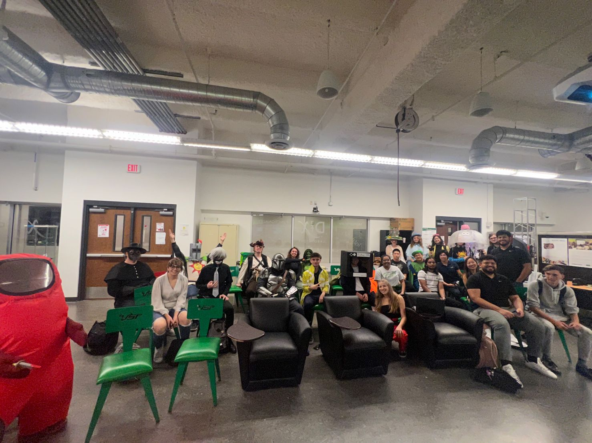
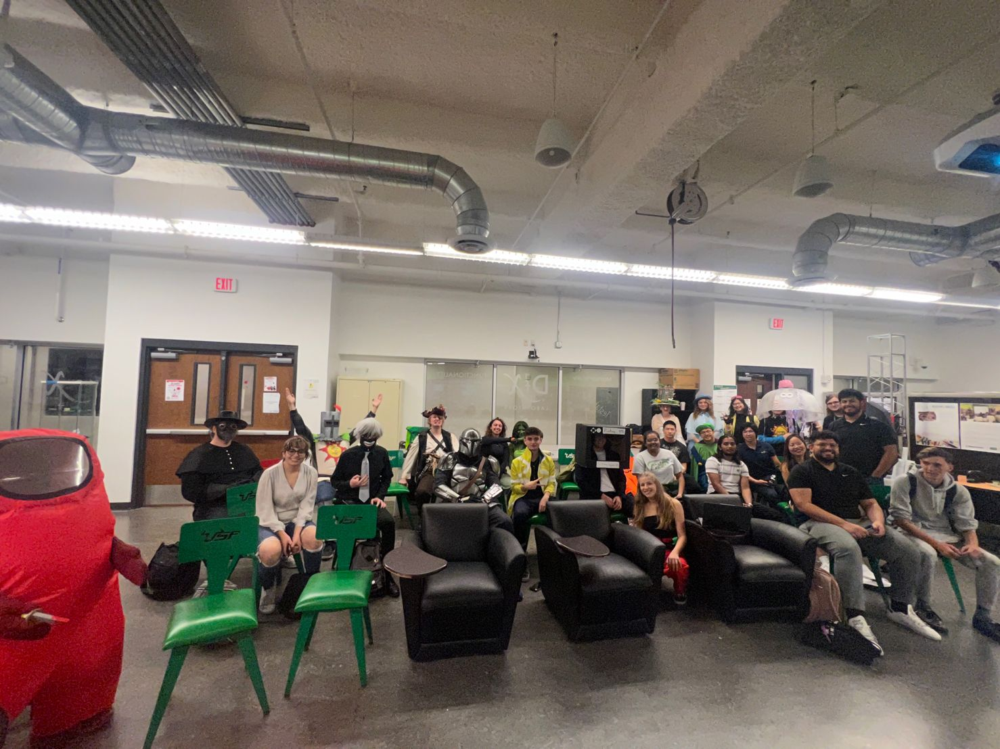

Technical Development Director
ASME - Americal Society of Mechanical Engineers
Main activities:
- Direct monthly workshops to build industry-relevant technical skills, including CAD design, soldering, and microcontroller applications, through hands-on activities for member development, improving task delegation, and inter-team communication.
.
.
Here are some pictures from the workshops :)
.

.
 
